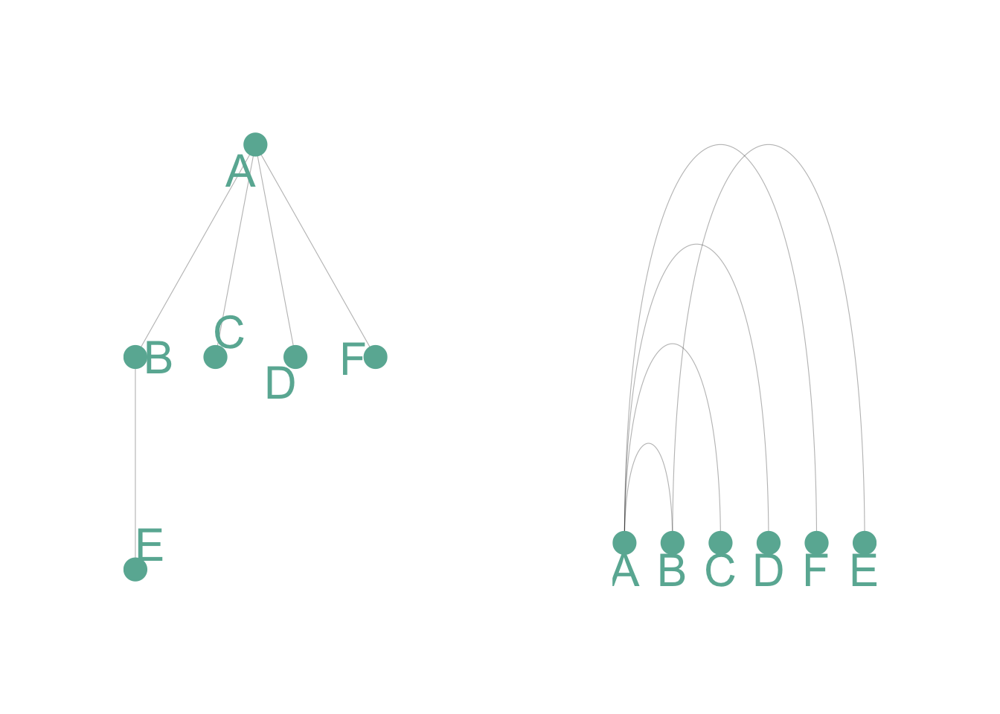
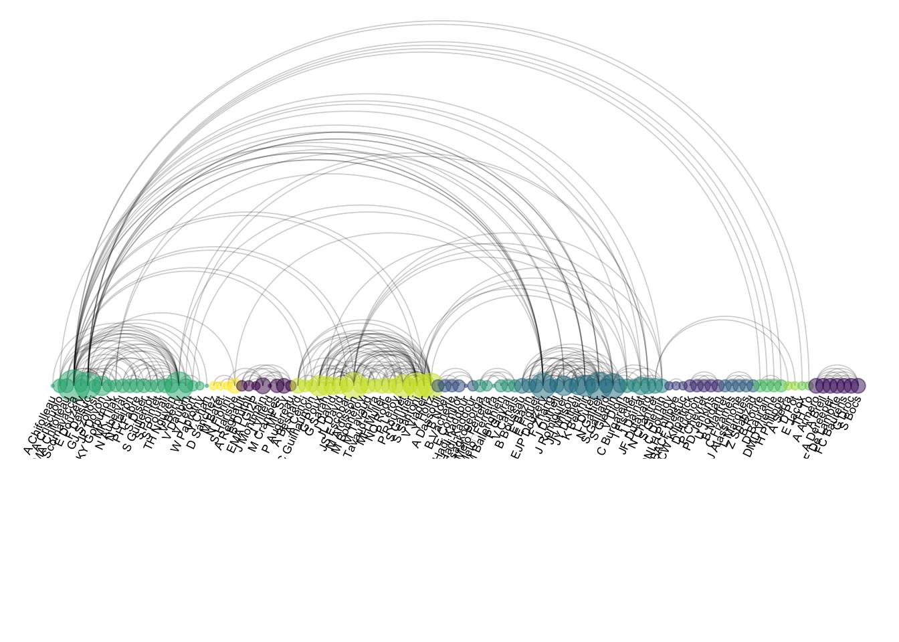
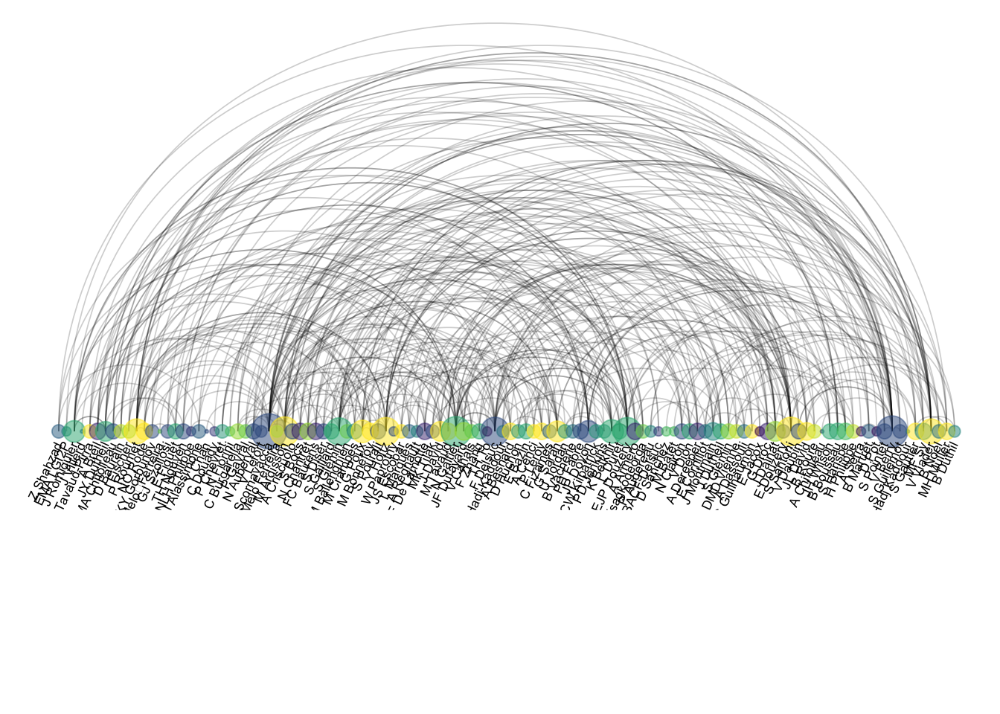

Show/Hide Code
library(tidyverse) # 数据处理核心包
library(viridis) # 颜色方案
library(patchwork) # 图形拼接
library(hrbrthemes) # 图形主题
library(igraph) # 图论和网络分析
library(ggraph) # 基于ggplot2的图形语法
library(colormap) # 颜色映射library(tidyverse) # 数据处理核心包
library(viridis) # 颜色方案
library(patchwork) # 图形拼接
library(hrbrthemes) # 图形主题
library(igraph) # 图论和网络分析
library(ggraph) # 基于ggplot2的图形语法
library(colormap) # 颜色映射这里有一个简单的例子。6 个节点之间的 5 个连接分别用二维网络图（左）和弧形图（右）表示
# 加载必要的库
library(tidyverse) # 数据处理核心包
library(viridis) # 颜色方案
library(patchwork) # 图形拼接
library(hrbrthemes) # 图形主题
library(igraph) # 图论和网络分析
library(ggraph) # 基于ggplot2的图形语法
library(colormap) # 颜色映射
# 创建一个简单的边列表
links <- data.frame(
source = c("A", "A", "A", "A", "B"), # 源节点
target = c("B", "C", "D", "F", "E") # 目标节点
)
# 转换为igraph对象
mygraph <- graph_from_data_frame(links)
# 创建传统的2D网络图
p1 <- ggraph(mygraph) +
geom_edge_link( # 绘制边连接
edge_colour = "black",
edge_alpha = 0.3,
edge_width = 0.2
) +
geom_node_point( # 绘制节点
color = "#69b3a2",
size = 5
) +
geom_node_text( # 添加节点标签
aes(label = name),
repel = TRUE,
size = 8,
color = "#69b3a2"
) +
theme_void() + # 使用空白主题
theme(
legend.position = "none", # 隐藏图例
plot.margin = unit(rep(2, 4), "cm") # 设置边距
)
# 创建弧形图
p2 <- ggraph(mygraph, layout = "linear") + # 使用线性布局
geom_edge_arc( # 绘制弧形边
edge_colour = "black",
edge_alpha = 0.3,
edge_width = 0.2
) +
geom_node_point( # 绘制节点
color = "#69b3a2",
size = 5
) +
geom_node_text( # 添加节点标签
aes(label = name),
repel = FALSE,
size = 8,
color = "#69b3a2",
nudge_y = -0.1 # 标签向下偏移
) +
theme_void() + # 使用空白主题
theme(
legend.position = "none", # 隐藏图例
plot.margin = unit(rep(2, 4), "cm") # 设置边距
)
# 使用patchwork拼接两个图
p1 + p2
弧图在传达整体节点结构方面不如二维网络图。但它有两个主要优势：
- 如果节点顺序优化，它可以很好地突出显示集群和桥梁
- 它允许显示每个节点的标签，这在二维结构中通常是不可行的。# 加载数据
dataUU <- read.table(
"https://raw.githubusercontent.com/holtzy/data_to_viz/master/Example_dataset/13_AdjacencyUndirectedUnweighted.csv",
header = TRUE
)
# 将邻接矩阵转换为长格式
connect <- dataUU |>
gather(key = "to", value = "value", -1) |> # 宽转长格式
mutate(to = gsub("\\.", " ", to)) |> # 替换点号为空格
na.omit() # 移除缺失值
# 计算每个人的连接数
c(as.character(connect$from), as.character(connect$to)) |>
as_tibble() |> # 转换为tibble格式
group_by(value) |> # 按人名分组
summarize(n = n()) -> coauth # 计算连接数
colnames(coauth) <- c("name", "n") # 重命名列
# 使用igraph创建图对象
mygraph <- graph_from_data_frame(
connect,
vertices = coauth,
directed = FALSE # 无向图
)
# 寻找社区结构
com <- walktrap.community(mygraph) # 使用随机游走算法检测社区
# 重新排序数据集并创建图
coauth <- coauth |>
mutate(grp = com$membership) |> # 添加社区分组信息
arrange(grp) |> # 按分组排序
mutate(name = factor(name, name)) # 将名称转为因子
# 只保留前15个社区
coauth <- coauth |>
filter(grp < 16)
# 在边数据中只保留这些人员
connect <- connect |>
filter(from %in% coauth$name) |> # 过滤源节点
filter(to %in% coauth$name) # 过滤目标节点
# 重新创建图对象
mygraph <- graph_from_data_frame(
connect,
vertices = coauth,
directed = FALSE
)
# 在viridis色阶中准备颜色向量
mycolor <- colormap(
colormap = colormaps$viridis,
nshades = max(coauth$grp) # 根据社区数设置颜色数
)
mycolor <- sample(mycolor, length(mycolor)) # 随机打乱颜色
# 创建弧形图
ggraph(mygraph, layout = "linear") + # 线性布局
geom_edge_arc( # 绘制弧形边
edge_colour = "black",
edge_alpha = 0.2,
edge_width = 0.3,
fold = TRUE # 折叠重叠边
) +
geom_node_point( # 绘制节点
aes(size = n, color = as.factor(grp), fill = grp),
alpha = 0.5 # 透明度
) +
scale_size_continuous(range = c(0.5, 8)) + # 节点大小范围
scale_color_manual(values = mycolor) + # 手动颜色映射
geom_node_text( # 添加节点标签
aes(label = name),
angle = 65, # 文字倾斜角度
hjust = 1, # 水平对齐方式
nudge_y = -1.1, # 垂直偏移
size = 2.3 # 文字大小
) +
theme_void() + # 空白主题
theme(
legend.position = "none", # 隐藏图例
plot.margin = unit(c(0, 0, 0.4, 0), "null"), # 图形边距
panel.spacing = unit(c(0, 0, 3.4, 0), "null") # 面板间距
) +
expand_limits( # 扩展坐标轴范围
x = c(-1.2, 1.2),
y = c(-5.6, 1.2)
)
顺序很重要,顺序不对就是个灾难:
# 随机重新排序数据集
coauth <- coauth |>
slice(sample(c(1:nrow(coauth)), nrow(coauth))) # 随机抽样重排
# 使用igraph创建图对象
mygraph <- graph_from_data_frame(
connect,
vertices = coauth,
directed = FALSE # 无向图
)
# 在viridis色阶中准备n个颜色的向量
mycolor <- colormap(
colormap = colormaps$viridis,
nshades = max(coauth$grp) # 根据分组数设置颜色数
)
mycolor <- sample(mycolor, length(mycolor)) # 随机打乱颜色顺序
# 创建弧形图
ggraph(mygraph, layout = "linear") + # 线性布局
geom_edge_arc( # 绘制弧形边
edge_colour = "black",
edge_alpha = 0.2,
edge_width = 0.3,
fold = TRUE # 折叠边
) +
geom_node_point( # 绘制节点
aes(size = n, color = as.factor(grp), fill = grp),
alpha = 0.5
) +
scale_size_continuous(range = c(0.5, 8)) + # 节点大小范围
scale_color_manual(values = mycolor) + # 手动设置颜色
geom_node_text( # 添加节点标签
aes(label = name),
angle = 65, # 文字角度
hjust = 1, # 水平对齐
nudge_y = -1.1, # 垂直偏移
size = 2.3 # 文字大小
) +
theme_void() + # 空白主题
theme(
legend.position = "none", # 隐藏图例
plot.margin = unit(c(0, 0, 0.4, 0), "null"), # 图形边距
panel.spacing = unit(c(0, 0, 3.4, 0), "null") # 面板间距
) +
expand_limits( # 扩展坐标轴范围
x = c(-1.2, 1.2),
y = c(-5.6, 1.2)
)